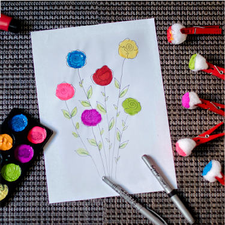
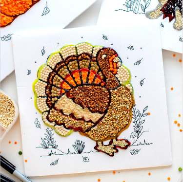

About Us
Your child is still so small, and he needs to be taught a lot. How can this
be done if the child cannot concentrate and sit still? Our educational games will
interest and keep your child's attention. By completing play tasks, your kid
will gradually learn what will be useful in further education in kindergarten
and school.

Together with us, you will learn to distinguish colors, count, combine
objects according to characteristics, compare objects in size, and much
more. And our entertaining games will always help you to relax after mental
or physical exertion. Remember that educational games develop a child's
thinking, teach him to independently express his thoughts and feelings.
The sooner you start working with your child, the more confident he will
feel in the future.
I used a variety of seeds. This is a great excuse to use up last year’s (or even
older) seeds that didn’t get planted. A diversity of colors, shapes, and sizes adds
a bit of interest to the activity and the finished work. Do not do this activity with younger toddlers
or any child who may put the seeds
in their mouth. Supervise the children the entire time they are doing this activity.

This was a fun easy project with very little prep needed.
Older children could create fun patterns and mosaic pictures with their seeds,
younger children can simply glue the seeds onto the paper in whatever manner they
wish. The activity is very flexible.
I used a variety of seeds. This is a great excuse to use up last year’s (or even
older) seeds that didn’t get planted. A diversity of colors, shapes, and sizes adds
a bit of interest to the activity and the finished work.
Do not do this activity with younger toddlers or any child who may put the seeds
in their mouth. Supervise the children the entire time they are doing this activity.
About a year ago, a child development school was opened, in which loud
voices are heard every day. We pursue a variety of creative directions for
all ages, from early development classes to Chinese for adults. Older guys
attend chess and robotics, girls are fond of a creative studio, but
choreography, an art studio is suitable for absolutely everyone. In
addition, the development school provides individual consultations with
a psychologist, correctional and developmental classes with a speech
therapist and a defectologist. Every day, elementary school students come
to "Vasilek" for the extended day group, where we do not only do homework,
but also creativity, English, chess, the development of logic and
broadening our horizons.
At the Center for Social Adaptation for Children with Disabilities, our
specialists help children learn about the world around them and get ready
for school.
We have a big goal - to make every child who comes to us happy.
Experienced teachers and educators, the latest educational programs for every age, constant professional development, participation in professional competitions - all this helps us to achieve our goal.